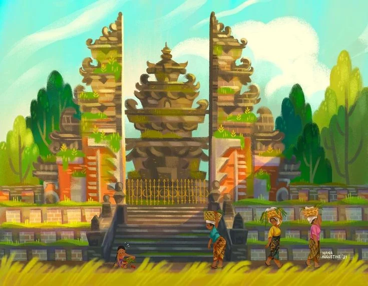
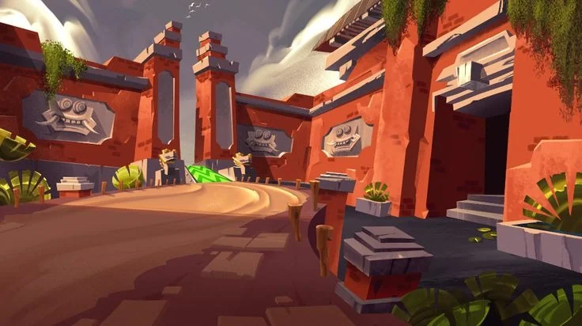
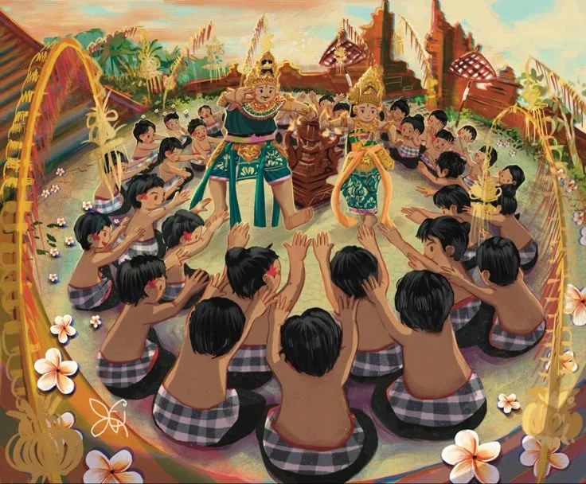
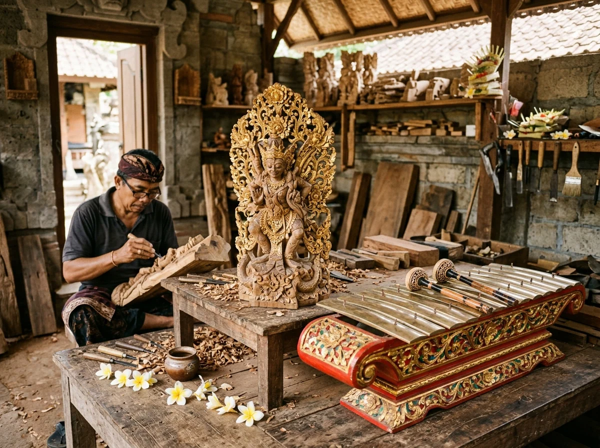
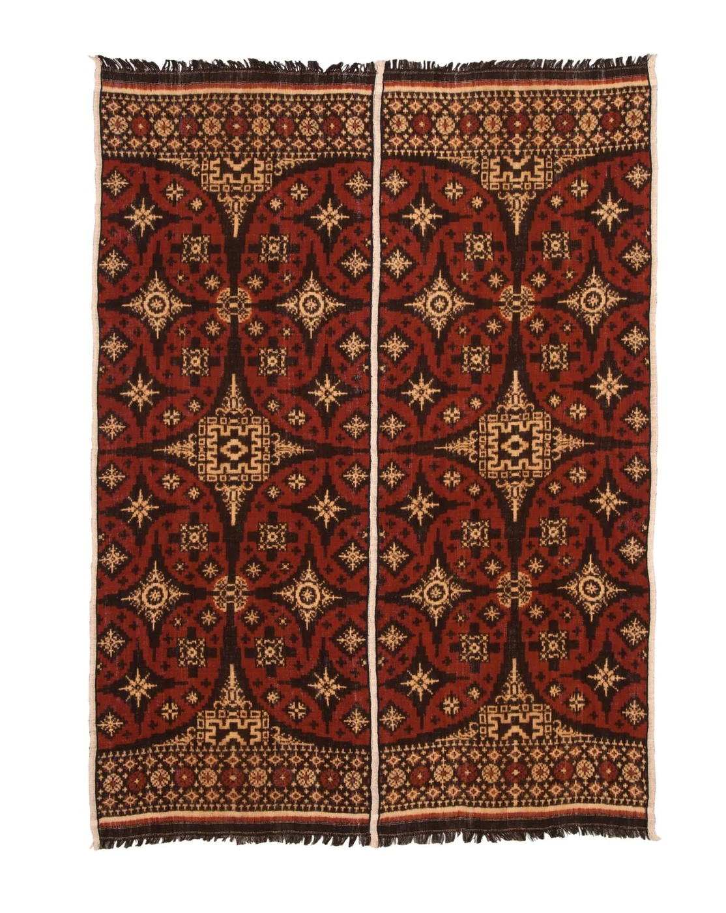
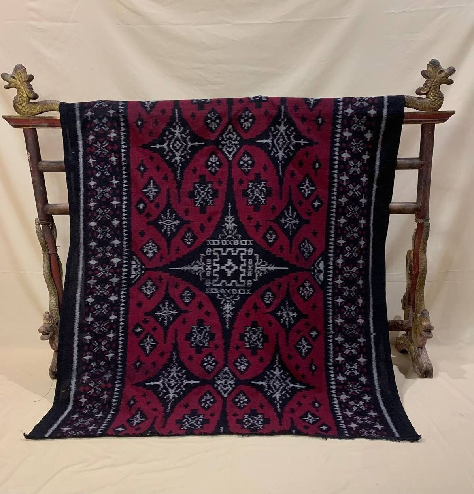

Bab I · Fajar & Doa
BAB 1 DARI 5
Kidung Fajar di Ufuk Desa
Aroma dupa cendana, tetesan tirta suci, dan ketulusan sesaji canang sari mengawali denyut fajar krama di pasar rakyat desa.
Menyelami kehangatan gotong royong, kearifan desa adat, dan ketulusan tradisi yang menjaga denyut jiwa Pulau Dewata tetap lestari.
Buka lembaran kisah hidup masyarakat Bali laksana buku cerita yang hidup. Menyusuri kidung fajar, kehangatan lorong desa adat, ketulusan gotong royong, gema bale banjar, hingga tangga zamrud subak. Klik kartu untuk membuka bab cerita dan galeri foto.

Bab I · Fajar & DoaAroma dupa cendana, tetesan tirta suci, dan ketulusan sesaji canang sari mengawali denyut fajar krama di pasar rakyat desa.

Bab II · Ruang BersamaKearifan pintu gerbang bata merah tanpa kunci rapat, merawat kehangatan dan rasa aman persaudaraan antar-keluarga desa.

Bab III · Gotong RoyongKeajaiban gotong royong tulus tanpa pamrih, menyatukan ribuan tangan krama menyambut piodalan agung dengan sukacita.
 Bab IV · Jantung Komunitas
Bab IV · Jantung Komunitas
Ketukan kayu kulkul pemersatu warga—pusat musyawarah mufakat, sanggar seni tari, dan denyut solidaritas komunitas.
 Bab V · Tri Hita Karana
Bab V · Tri Hita Karana
Harmoni seribu tahun irigasi warisan UNESCO—keadilan pembagian air berkat restu Dewi Danu dan filosofi Tri Hita Karana.
Denyut sejati Bali hidup dalam ketulusan krama desa yang bersatu merawat peradaban luhur, menjaga tanah pusaka, dan menghidupkan tradisi turun-temurun.
Sistem irigasi demokratis warisan leluhur yang menjaga kedaulatan pangan pulau dan keharmonisan semesta Tri Hita Karana.
Mahakarya tenun dobel ikat gringsing, seni ukir kayu garuda, anyaman bambu, dan gerabah rumahan warisan lintas generasi.
Denyut ekonomi rakyat sejak fajar menyajikan rempah segar, bunga persembahan canang, dan keramahan senyum tulus.
Wadah musyawarah warga adat, ketulusan gotong royong ngayah, dan sanggar pelestari kidung gamelan leluhur.
Kunjungi langsung bengkel seni, sanggar tenun, dan studio pahat kayu milik warga desa. Gunakan tautan Google Maps untuk menemukan rute menuju sentra kerajinan otentik di Pulau Dewata.

Gianyar · Sentra Perak & Pahat BatuSentra perajin perak filigree sejak abad ke-19 dan pemahat batu paras cadas pembuat ornamen pura klasik.
 Gianyar · Sentra Ukir Kayu & Topeng
Gianyar · Sentra Ukir Kayu & Topeng
Lorong wangi kayu cendana tempat berkumpulnya pemahat patung bertaraf dunia dan pembuat topeng Barong sakral.

Karangasem · Tenun Gringsing LangkaDesa Bali Aga pembuat kain tenun dobel ikat langka di dunia dengan pewarna alami akar mengkudu purba.

Karangasem · Tenun Endek & SongketLembah asri penghasil tenun endek halus dan songket benang emas berlatar panorama Gunung Agung.
Tindakan nyata dan sederhana yang dapat kita lakukan bersama untuk menjaga kelangsungan ekonomi krama desa serta merawat kemurnian budaya dan alam Bali.


Gunakan pemandu asal desa yang menguasai sejarah pura, cerita leluhur, dan jalur alam dengan rasa hormat.
Ungkapan tulus para penjaga tradisi, petani, dan perajin yang menyambut dunia dengan kehangatan dan kebanggaan atas warisan tanah leluhur.